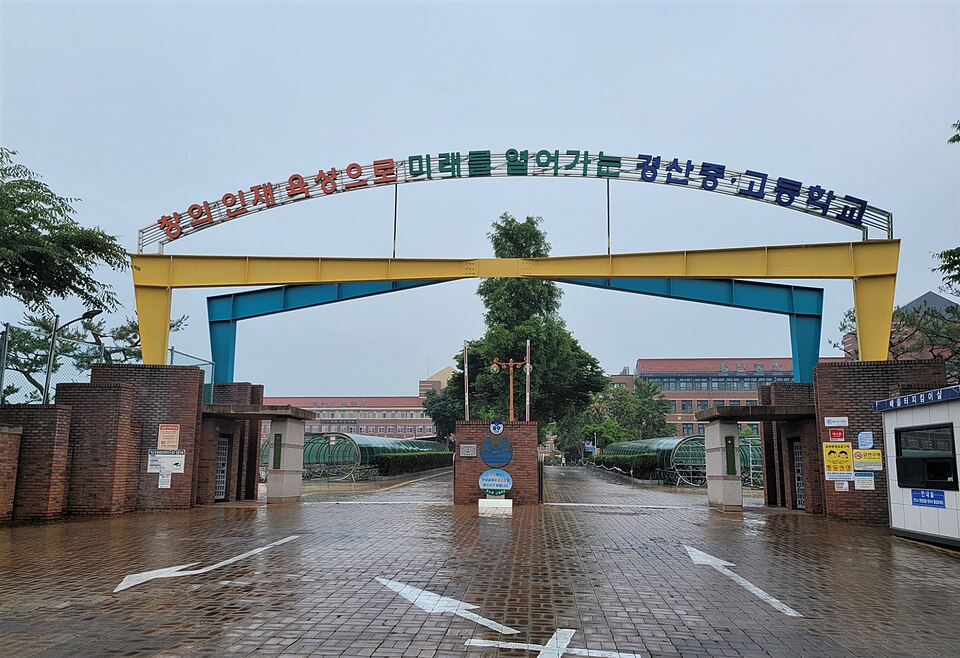

경북 경산은 관리 중인 학교가 27곳입니다. 경산고등학교·문명고등학교·사동고등학교·경산여자고등학교·진량고등학교 같은 고등학교와 경산중학교·문명중학교·장산중학교가 시 안에 나뉘어 있습니다. 대학가와 아파트가 붙어 있는 임당동·사동 쪽, 옛 시가지인 중방동·백천동 쪽, 그리고 하양·진량처럼 시내에서 떨어진 쪽은 학원 사정이 서로 다릅니다. 이동에 쓰는 시간이 아까운 학생은 집으로 오는 1:1 수학과외나 과학과외를 따로 찾게 됩니다.
오늘은 경산으로 직접 찾아가는 선생님 4명 중 두 분을 소개합니다. 한 분은 중등 과학부터 고등 물리·생명과학·지구과학까지 보는 선생님, 한 분은 초등부터 고3까지 수학 한 과목을 이어서 보는 선생님입니다.
경산에서 고등 과학과외를 선택과목까지 한 선생님에게 맡기고 싶을 때 맞는 선생님입니다. 중등 과학을 이어서 고등 물리·생명과학·지구과학까지 지도하기 때문에, 중3에서 고1로 넘어가며 과목이 갈라지는 시기에 진도를 끊지 않고 이어 갈 수 있습니다.
과학과 함께 고등 수학도 수업합니다. 과학 문제에서 계산이 막히는 학생은 원인이 수학 쪽에 있는 경우가 많은데, 두 과목을 한 선생님이 보면 그 자리를 같이 짚을 수 있습니다. 중학생은 영어도 함께 볼 수 있습니다. 방문과 화상을 모두 하기 때문에 시험 기간에 시간이 어긋나면 화상으로 바꿔 진행할 수 있습니다.
성ㅇ상 선생님 상세 프로필 →사동·중방동 쪽에서 중등 수학과외를 학원 진도에 맞춰 잡아야 할 때 맞는 선생님입니다. 학원에서 중학 수학 과정을 가르친 경력이 있어, 학교 진도와 학원 커리큘럼 사이에서 지금 무엇을 먼저 볼지 정리해 줍니다.
초등 저학년부터 고3까지 수학 한 과목만 보기 때문에, 지금 막힌 단원의 원인을 앞 학년까지 거슬러 찾아 주는 수업이 가능합니다. 초등 학생과의 수업 경험도 있어 학년이 낮은 학생도 함께 볼 수 있습니다. 수업 가능 시간이 평일 오후와 늦은 저녁으로 나뉘어 있으니, 학원 일정이 있는 학생은 시간대를 먼저 확인해 주세요.
박ㅇ현 선생님 상세 프로필 →학교마다 진도와 시험 범위가 달라서, 학교별로 준비법을 따로 정리해 두었습니다.
👉 경산 수학과외 선생님 · 경산 과학과외 선생님 · 관리 학교 27곳 전체 보기